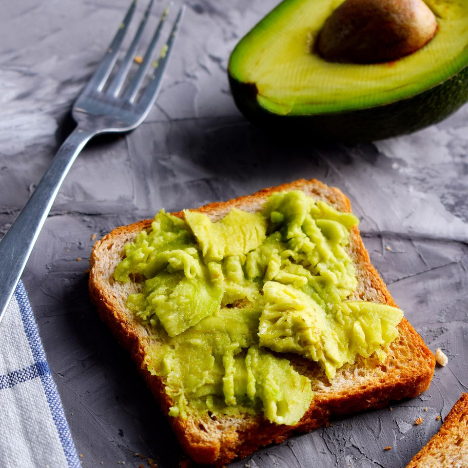

Avocado Toast
Zubereitung: 10 Minuten
Schwierigkeit: Einfach
Zutaten für 1 Personen:
Zutaten:
- 1 Avocado
- 4 Scheiben Toastbrot
- Salz
- Pfeffer
- Zitronensaft
- 1 EL Ahornsirup
Zubereitung:
- Die Avocado aufschneiden, den Kern entfernen und das Fruchtfleisch mithilfe eines Löffels ausschaben. Das Innere am besten in einer kleinen Schale sammeln.
- Nun die Avocado mit einer Gabel zerdrücken bis eine Creme entsteht. Gebt einige Spritzer Zitronensaft hinzu, um zu verhindern, dass sich das Fruchtfleisch braun färbt.
- Das Toastbrot toasten, mit der Avocado-Creme bestreichen und mit Pfeffer und Salz würzen.
zurück